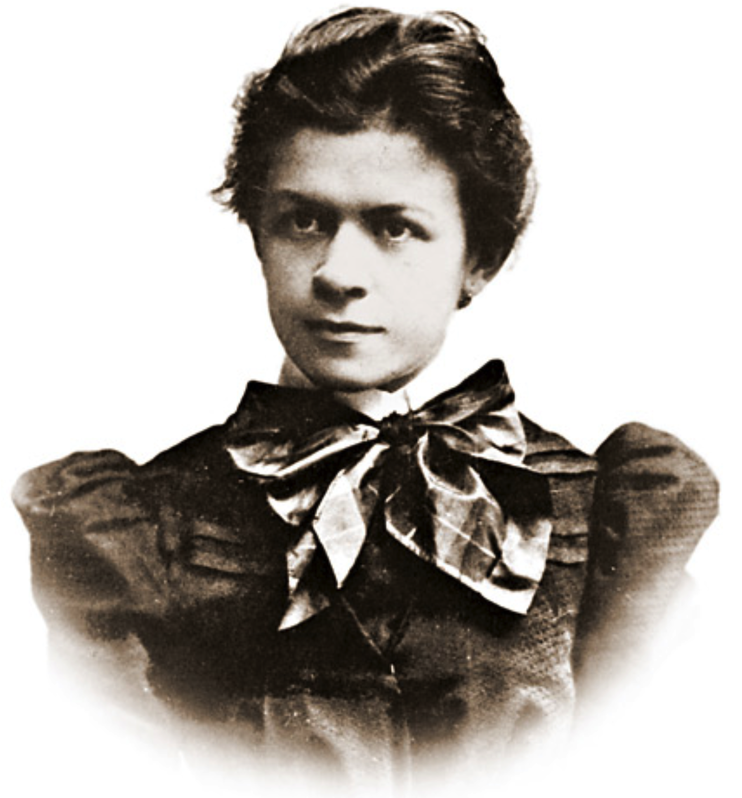

16.1. A Little Bit About Einstein#
He was is indisputably unique and yet ubiquitous. Surely the most recognizable representative of physics, ever. I mean, “Person of the Century”? Within your field of view right now are devices and modern-day conveniences that he invented or for which he laid the framework. Your reading on more than one. He also changed every branch of physics, and invented a couple of them. There’s no ambiguity: his was the most imaginative and productive scientific career since Newton, in many ways broader in scope than Isaac’s.
Note
He was also a walking contradiction in many ways: a lover of mankind, yet indifferent and even cruel to individuals; a rebel in so many ways, yet so conservative that he left the mainstream of physics that he started; solitary and focused to an almost superhuman degree, and yet fond of the limelight; practical in his scientific outlook, and yet a sophisticated student of Mozart, Kant, Hume, Spinoza, and Schopenhauer. An enigma.
Stories and myths abound. That’s probably no surprise. No. He didn’t flunk math. He taught himself calculus while barely in high school. No. He didn’t flunk anything. He read Kant at the age of 13! No, he was not religious. His family were secular Jews who sent him to a Catholic high school. When asked, he espoused the philosophy of Spinoza, which is the opposite of a deity-worshiping religion.
Professional physicists find it hard to “own” Albert Einstein. You’ve met a few other folks in your experience so far (Newton, Huygens, and Maxwell, and a couple more to come, Dirac and Feynman) who can’t be “followed” in the sense of learning to be like them. Their packages of creativity, imagination, ingenuity, practical skill, and productivity can’t be learned or emulated. Their approaches were unique. Almost beyond-human. I hope I’ve been able to demonstrate that so far. But this guy is off the charts.
So while we enjoy reading of their lives, it’s hard to use someone like Einstein as an example of a typical scientist. There’s no formula for being a Hank Aaron or Nadia Comaneci or Count Basie or Wolfgang Amadeus Mozart…or an Albert Einstein. They open worlds for us to work in, but they can’t set an example for us to emulate.
Because he’s so important and because his life is so interesting, we’ll cover Einstein over multiple lessons. I’ll introduce him in this lesson and we’ll follow him to his first academic appointment – a rocky road. Special Relativity will be the focus here, of course, but when we get to Quantum Mechanics I’ll fill in some of the details that surround that part of his work.
Note
In 1905, Albert Einstein had four ideas that changed the world. They all should have been Nobel Prizes, but weren’t. In fact, that’s a disaster story that we’ll cover later. In 1905 he invented the idea of the particle nature of freely propagating light; he convincingly showed how to demonstrate that atoms exist – quickly confirmed, settling a two thousand year-old argument; in his PhD thesis, he showed how to determine the size of molecules; and he invented Special Relativity – changing our relationship with space, time, and energy. In one year. As a completely unknown 26 year old, without a Ph.D., working all alone outside of the physics community. He went from being less than a nobody to being such a threat to Nazi Germany, that he had to flee for his life. All because of his calculations. That’s power.
He was born in 1879 to a stable, loving secular Jewish family in the city of Ulm, which is about 100 miles northeast of Zurich. His father, Hermann was a salesman and co-founded a feather-bed shop with cousins. Albert was born to him and Pauline on March 14, 1879. (We North American geeks all celebrate “Pi Day” on 3.14, but we physics geeks recognize that to be Einstein’s birthday also. European geeks have to bend their way of displaying dates in order to join in the fun, since that’s 14.3 to them.) The bed shop failed – one of the first of many business failures for Hermann – and the family moved to Munich, about 100 miles to the east where Hermann and his brother, Jakob, founded an electric firm which specialized in municipal electrification, a brand new technology. Hermann did the sales and Jakob, an engineer, the technical work and they had some success, providing light for the Munich Oktoberfest in 1885. By that time, Albert’s devoted sister, Maria (“Maja”) was four years old and Albert six.
They bet wrong. There was a large fight over whether power distribution should be Direct Current or Alternating Current. Maybe you’ve heard of the contentious battle between Thomas Edison and Nicola Tesla. Edison lost – he favored DC – and Tesla won – he championed AC. Hermann and Jakob lost the DC-AC battle also and their business folded when they were unable to convert their factory to AC and lost the contract to electrify the whole of Munich. They moved their factory to Pavia, Italy where it failed in 1896. The brothers split, and Hermann started another electrification factory in Milan which managed to hold together until Hermann died of a heart attack in 1902 at the age of 55.
Albert had not followed the family to Italy, but remained with relatives in Munich to attend a Catholic primary school. He was successful enough – often the top in his class – that students remember him helping them with their Catholic studies. When he was 9, he switched to a large, Munich high school which emphasized mathematics and science. While he was the only Jew in elementary school, there were enough Jews in high school that school officials organized Jewish religious studies for them – in Germany! As I mentioned, he didn’t flunk mathematics. He taught himself integral and differential calculus before he was 15 – which was the year his father’s business in Pavia failed. His parents still regularly bought him advanced books which he devoured during summer vacations.
During these years he began to form at least two personal traits. Bavaria was a regimented society and reverence for a militaristic outlook was a part of life. Not for this child. He rebelled internally, and rebelled outwardly in school against mindless rules. “A foolish faith in authority is the worst enemy of truth.” His impudence showed and teachers either loved him or disliked him intensly. And publicly.
The other personal – even therapeutic – aspect of his life was the violin. From age 5 he and his mother would play Mozart duets and he would reach for his violin when stuck on a problem, proclaiming that he’s solved it in the middle of a piece. (I can relate in a tiny way, and I suspect many of my friends can as well. I know that I solved problems in graduate school while I slept. But while I used unconsciousness, Albert used amazing powers of concentration and focus.)
He might have been expelled from high school, or he left on his own. It’s not clear, but he simply didn’t return after Christmas vacation in 1894. Rather he appeared at his family’s apartment in Italy proclaiming that he was done with Germany – military conscription was on the horizon for him and he managed to rid himself of his German citizenship. He worked in the family business and studied for entrance in to the Zurich Polytechnic, which was a technical college that would prepare physics students to teach in high schools or maybe go for an advanced degree elsewhere. The Polytechnic did not offer anything but a bachelor’s degree.
Here’s where he failed. He was offered the opportunity to take the entrance exams – remember, without a high school diploma – and scored well above the necessary requirements in mathematics and physics, but did not meet the standards in literature, French, politics, and the other sciences. He was advised to find a tutor and to take them again in a year.
That he did: when he was 16 he moved to Aarau and lived with the Winteler family led by Jost who taught history and Greek at the advanced, and rather liberal cantonal school. In the Winteler household, he found his first girl-friend, Marie, a newly trained teacher and 18 years old. He would eventually treat her badly, but his connections to that family were permanent. Marie’s sister, Anna, would marry Einstein’s best friend, Michael Besso (the only person mentioned in Einstein’s 1905 relativity paper) and his sister, Maja, would marry Marie’s brother, Paul.
What’s worse than breaking up with your girlfriend using text? Why using her mother as the deliverer of the bad news. Soon after entering the university, Einstein wrote to Marie’s mother that he wanted to end his relationship with Marie who did not quite get the hint in his increasingly cold, and then absent letters. Marie had a hard life, married, but divorced. She was often ill and died in a mental asylum in 1957.
16.1.1. Mileva Mari#
Remembering Marie Curie’s experience in attending a university in Europe in the 1890s should give you the impression that women in college were not common, and not often welcome. In Einstein’s entering class of 6 students at the Zurich Polytechnic there was a young Serbian woman. You should form the image of a strong, young person, far from home, but determined to obtain a tough degree.

Mileva Mari was the daughter of a retired military officer in the army of the Austrian-Hungarian monarchy. She was bright and her father found ways to enroll her in increasingly rigorous, and unlikely, advanced mathematically-intense schools in her home town of Novi Sad, and then a neighboring city. She moved herself to Zurich (for her health, as she might have once had tuberculosis) to finish high school in an all-girls academy, then she enrolled in the University of Zurich for a semester, and eventually transferred to the Polytechnic as a first-year student with Einstein, who was two years younger.
The “Mileva story” is complicated for a variety of reasons. She and Albert were friends during their first years, and that friendship turned into a tentative romance that first summer. And, as a very independent person, their relationship worried her enough that she transferred to the University of Heidelberg for the next year to avoid him. But their separation didn’t last and she returned, now committed to what became a serious romance.
While she bore a permanent limp, they took long mountain hikes and read physics together, alternating between their two student boarding houses. They seemed to revel in their “otherness” and bohemian outlook on life. She was intense and somewhat brooding, he was similar. A match. Their correspondence was far from rebellious – it was sweet to annoyingly syrupy. “Soon I’ll be with my sweetheart again and can kiss her, hug her, make coffee with her, scold her, study with her, laugh with her, walk with her, chat with her, and ad infinitum!” “When I read Helmholtz for the first time I could not—and still cannot—believe that I was doing so without you sitting next to me. I enjoy working together and I find it soothing and also less boring.” He called her Dollie and she called him Johnnie. Icky comes to mind.
By the time they both finished their studies, Albert finished second from the bottom in his class where did very well in theoretical physics and mathematics but was mediocre in all of his other subjects, including the lowest score possible in experimental physics. Probably blowing up an experiment in the lab and his outward disrespect to the professor in charge of experiment didn’t help. Mileva scored at the bottom, of their class and tried two more times to take the final exams, but failed each one and was not allowed to graduate with a degree.
16.1.2. What Unemployment Looks Like#
So there they were in 1900. Albert with his teaching degree and no job. Mileva, without a degree. It was normal for a physics graduate to move on to another university for continuing studies [the Polytechnic would not offer PhD degrees until 1909, eventually becoming the very prestigious Eidgenössische Technische Hochschule (ETH)] or to stay as an assistant to one of the Polytechnic professors.
Not only would no Polytechnic professor hire him, but Weber sent letters to other European professors warning them that Einstein was bad news. So he was effectively blackballed from employment or education in physics. For the next two years Einstein taught high school or tutored rich boys while peppering Europe with job applications.
Then. Mileva became pregnant. For a while she lived alone in Zurich and then in a town near the village where he was a live-in tutor. Through much of her pregnancy, they lived apart, corresponding by mail.
This is where his pal Marcel Grossmann comes through. Grossmann was a brilliant mathematician, eventually, a professor mathematics at the ETH. Einstein regularly avoided classes and Marcel was both his friend and his academic resource. Grossmann’s notes were apparently impressively complete and he’d loan them to Albert before examinations. Albert wrote to Grossmann’s wife later,
“When it came time to prepare for my exams, he would always lend me those notebooks, and they were my savior. What I would have done without these books I would rather not speculate on.”
Grossman’s father was influential and by chance, a friend of the Director of the Swiss Patent Office in Bern, the capitol. He recommended Einstein for an open position and after a lengthy back and forth, a job description was crafted to exactly match Einstein’s credentials: a degree in physics and practical experience in electricity – from his summers working for his uncle Jakob.
The couple was not married and Albert was not ready. It was hard on her and she was determined to have the baby.
Note
While pregnant in July 1901 Mileva tried for the last time to pass her exams and failed. During that episode Albert was on vacation in Milan with his parents. His mother loathed Mileva and he never told them of the pregnancy. When she failed, Mileva went home to tell her parents of her failure and of her pregnancy. Alone.
The patent office position became official in January of 1902, Einstein moved to Bern in anticipation – without Mileva, since as a Swiss civil servant, living with an unwed woman would have been disqualifying. Within days of his arrival, she gave birth to a healthy girl, Lieserl. In Serbia.
Einstein never saw his daughter as Mileva returned to Switzerland without her in the fall of 1902 – to Zurich, not Bern. They eventually married in January of 1903 in a civil ceremony with only Einstein’s two friends in attendance. Afterwards, they had dinner and later learned that Albert had locked them out of their apartment.
Lieserl’s existence was not known until it was discovered in 1987 correspondence. Her fate is unclear and there are two theories. One is that she died in September of 1903 of scarlet fever. The other is that she was adopted by one of Mileva’s childhood friends to a life that is lost to history.
16.1.3. Bern#
Einstein’s appointment was as Technical Expert Class 3 of the Federal Office for Intellectual Property. His experience with Jakob led him into patents that had electromagnetism as their basis. It was the perfect setup for him.
“I became accustomed to my work quite fast, and in a short time I was able to do a full day’s work in only two or three hours. The remaining part of the day, I would work out my own ideas, which later, of course, became the Relativity Theory…Whenever anybody would come by, I would cram my notes into my desk drawer and pretend to work on my office work.”
His day started at 8 AM and his walk from their apartment in the Medieval section of Bern took him past the 13th century famous clock tower near the original city wall. He spent 7 years at the Patent Office and was promoted once, when he completed his PhD by submitting a thesis to the University of Zurich in April of 1905. (In those times in Europe it was not necessary to be enrolled in a university to receive a PhD there…you could send a thesis to a professor who, if it was accepted, would lead to an examination and a degree. That’s what he did.)
Let’s summarize his life in a timeline. It’s rather remarkable:
July, 1900: graduates with his bachelor’s degree in high school physics teaching from The Zurich Polytechnic.
1900: Fails repeatedly to get a position at his alma mater as an assistant and berates one of the senior faculty for spreading unflattering gossip about him to other scientists in Europe from whom Einstein was trying to find a job.
February, 1901: becomes Swiss citizen, fails his military service physical
1901: writes his first scientific paper.
1901-1902: works as a temporary teacher/tutor in Switzerland
1902: Lieserl is born in Hungary, but is lost to history.
June, 1902: Appointed as a Technical Expert Third Class at the Swiss Patent Office in Bern, Switzerland.
January, 1903: Mileva and Albert marry in Bern.
April, 1903: Albert and two friends establish their “Olympia Academy” for reading and discussing philosophy and science.
May, 1904: Son, Hans Albert, born in Bern.
1905: That ridiculous year:
March 17: Photoelectric effect paper, proposes quanta. (stay tuned)
May 11: Explains Brownian motion, quantitatively demonstrating the existence of atoms. (stay tuned)
July 20: Submits PhD thesis to University of Zurich, “A New Determination of Molecular Dimensions”
September 28: Special Relativity paper
November 21: \(E = mc^2\) paper
January, 1906: Receives PhD from the University of Zurich.
16.1.4. His 1905 Papers In Brief#
His first paper in March of 1905 took Planck’s idea that heat radiation came in “corpuscles” through vibrations of a surface’s atoms and extended it to the behavior of all electromagnetic phenomena. This is the invention of quantum mechanics and we’ll discuss it in depth later.
His second paper two months later proposed a way to confirm that molecules exist. In 1827 botanist Robert Brown was studying the odd, random motions of pollen grains suspended in water. Under a microscope, he found that they appeared to be jittery and would randomly move in an inefficient but coherent way. Of course his first guess was that the cause was a living organism, but subsequently it was found that inorganic material would do the same thing. This went unexplained for half a century. Until 1905.
Suppose a group of kids are close together and batting a beach ball over their heads. Without an attempt to guide the ball in any particular direction, the ball would sort of randomly jerk in all directions. Einstein proposed that the random pollen motions represented the kicks that the pollen received when it bounced against the unseen water molecules. And, he could calculate in a statistical way, how far, in a given time, on average a pollen molecule would move. Jittering all the way, but making overall progress. With lots of molecules, his model led to a statistical prediction which measurements confirmed. He could even predict the value of Avogadro’s’ Number and the average size of the molecules.
His PhD thesis, submitted two months after the Brownian motion paper, invented a way to calculate the size of sugar molecules dissolved in water. It was the first time that this had been considered for liquids, since the new-fangled “kinetic theory” was predicated on the behavior of molecules in gasses. Avoiding the radical notions of his quantum paper, he was able to predict Avagadros’ Number with only the inputs of the size of sugar molecules and the concentration of sugar. After some modifications in later years, his prediction was very accurate and became one of his most useful calculations.
Then, two months later he submitted his Special Relativity paper, our concern in this lesson.
Two months after that…his \(E=mc^2\) paper (which he derived as \(m=\dfrac{E}{c^2}\) ) was submitted.
16.1.5. Mileva’s Role#
I mentioned earlier that Mileva’s role is controversial. The issue is what was her participation in the development of Special Relativity, if any. He wrote lovingly four years prior about “our.” In 1901, : “How happy and proud I will be when the two of us together will have brought our work on the relative motion to a conclusion!” It’s clear from correspondence, that she probably helped him proof-read and check the mathematics. There was a, now refuted, story that she was a co-author on the original draft of the paper.
There is no example in correspondence between them, or they with others that suggest that Mileva was a part of the development of the concepts of relativity. She never made those assertions, even through a contentious divorce. Their older son also indicated that while she worked with him, it was likely in a supportive role. Whole conferences and TV specials have been devoted to this subject and for some it’s still an open question, but I think that the preponderance of the evidence is that Albert conceptualized and did the mathematics of Special Relativity and that Mileva helped him to make it coherent and be sure it was mathematically correct.
Let’s take it apart.